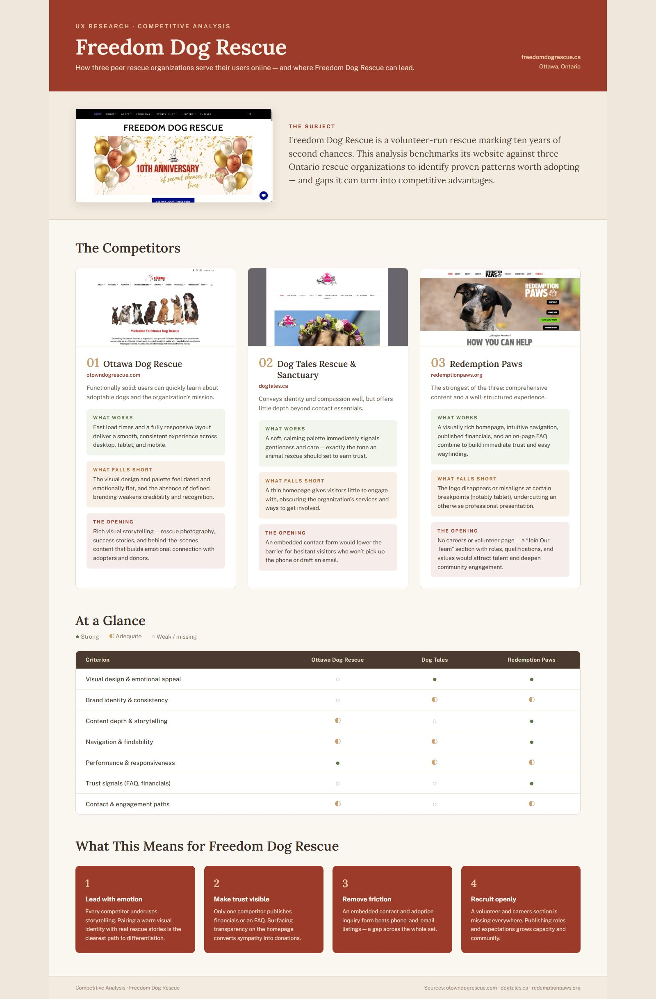
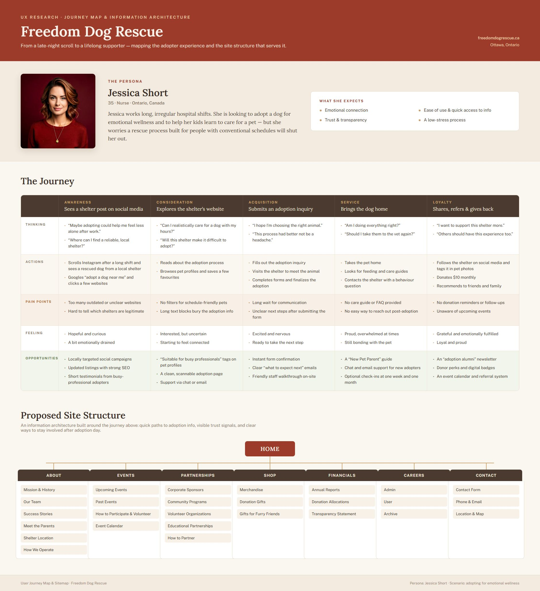
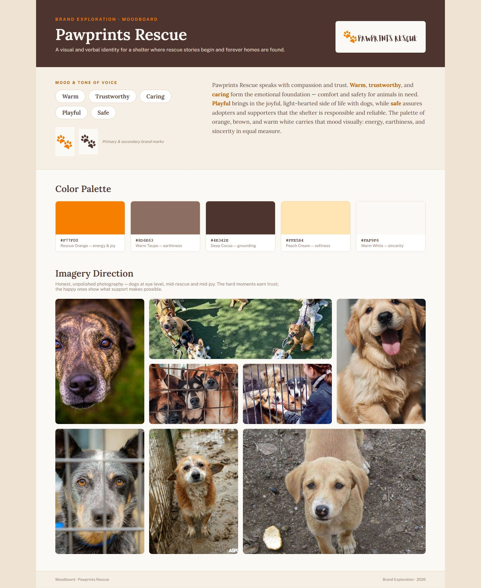
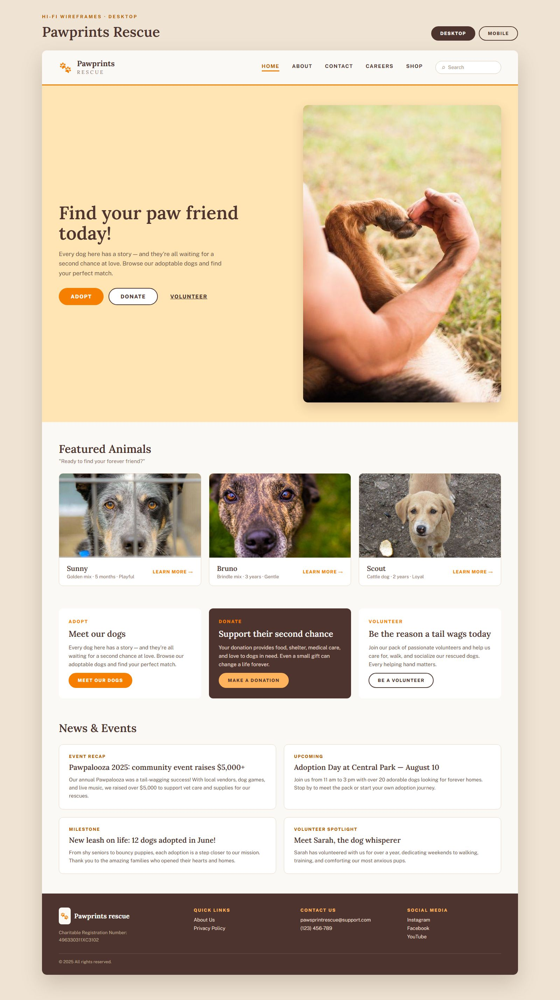
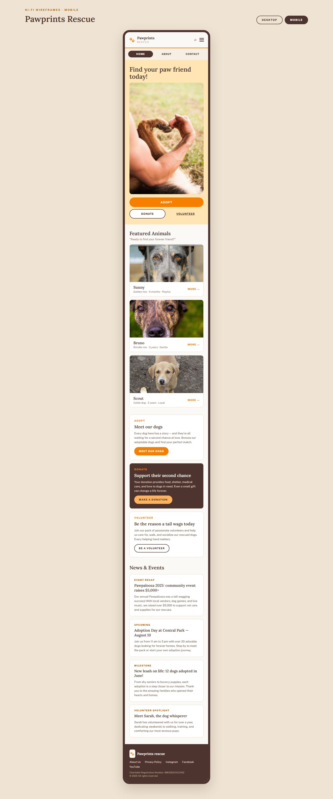

UX Research & Brand Identity
Pawprints Rescue — a home for every rescue story.
A full case study for Freedom Dog Rescue — competitive research, a persona-driven journey map, and a warmer new identity carried through hi-fi wireframes for desktop and mobile.
01 — The subject
Ten years of second chances, in need of a digital home
Freedom Dog Rescue is a volunteer-run rescue marking ten years of second chances. Before touching the interface, this case study started with research: how do adopters actually discover and trust a shelter online, and where does Freedom Dog Rescue's own site fall short of that?
"Every dog here has a story — and they're all waiting for a second chance at love."
02 — Competitive research
Benchmarking three peer rescues
A side-by-side audit of Ottawa Dog Rescue, Dog Tales Rescue & Sanctuary, and Redemption Paws surfaced the same four gaps again and again: underused emotional storytelling, invisible trust signals, a friction-heavy contact path, and no visible way to volunteer or apply. Those four gaps became the brief.

03 — Persona & journey
Jessica's path from late-night scroll to lifelong supporter
Jessica Short — a 35-year-old nurse adopting around irregular hospital shifts — anchored the journey map across five stages: awareness, consideration, acquisition, service, and loyalty. Mapping her thinking, actions, and pain points at each stage shaped the sitemap that follows it: seven clear top-level sections built around trust, not just navigation.

04 — Visual identity
Pawprints Rescue
The redesign carries a new name and a warmer voice. Warm, trustworthy, caring, playful, and safe set the tone; a palette of rescue orange, warm taupe, deep cocoa, and peach cream carries it visually. The imagery direction stays honest — dogs at eye level, mid-rescue and mid-joy.

"The hard moments earn trust; the happy ones show what support makes possible."
05 — Final UI, desktop
A homepage built to convert warmth into action
Adopt, donate, and volunteer sit above the fold as equal, unmissable paths — followed by featured dogs, a clear way in for each of the three intents, and a news feed that keeps supporters coming back after adoption day.

06 — Final UI, mobile
Responsive from the ground up
Every stage of the journey — including the CTAs adopters lean on most — was rebuilt for a one-handed, on-the-go experience.

07 — Explore the wireframes
Click through it yourself
The hi-fi board below toggles between the desktop and mobile builds — explore it directly.
pawprints-rescue.org
Next project